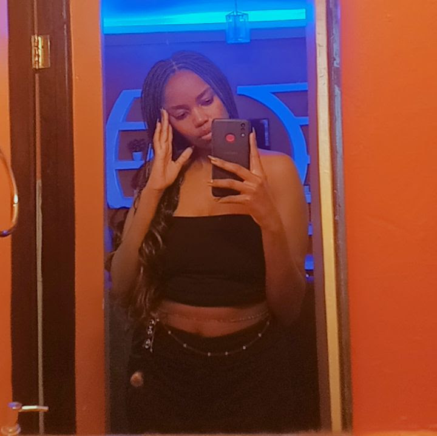

~ About Me ~
I choose to do software engineering because I find it very interesting and feel passionate about it. It is perfectly aligned with my career goals. The skills and knowledge I'll gain from this program will help me take my career to the next level and make a meaningful impact in my field
I wish to learn new skills, practice, and master them. To create projects and solutions that will make a change in my progress and give me a sense of achievement. I also hope to learn the work ethic from this program, not necessarily from the program but from myself, and put it into practice. Also, wish to challenge myself to come up with creative and impactful solutions that will make a change in my society and drive change even in a small way. I also hope to network and create relationships with my peers or my fellow students.to learn from each other and collaborate freely, hopefully, to make lifetime friendships or colleagues.
~ My hobbies are ~
- Taking online coding challenges
- Basketball
- Skating
- Cooking
- Working out
~ My Spirit Animal ~

The Cougar
As the cougar, I find my joy in prowling the shadows during the enchanting hours of dusk and dawn. My presence brings forth a blend of strength, courage, instinct, and an alluring mystique, guiding others to utilize power with integrity and fairness. Solitary by nature, I impart valuable lessons on effective leadership without succumbing to its pitfalls. Especially meaningful for women and those seeking a primal feminine connection, I advocate for a harmonious balance between primal urges and patient discernment. I encourage observation over impulsive action, advising restraint until the perfect opportunity arises. Emotional upheavals serve as reminders to cultivate inner serenity and impartiality. Though I may present challenges, those who listen closely to my wisdom will gain access to formidable power.
~ Keep in Touch ~
+(254)721563189